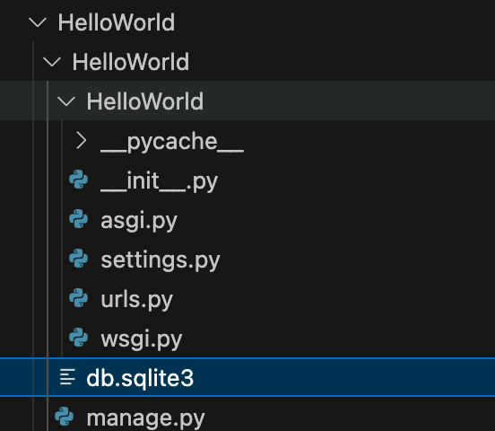

Django Project Structure Analysis
By understanding Django's project structure, we can organize code more efficiently, follow Django's best practices, and build maintainable web applications.
In the previous chapter, we have learned to usedjango-admin startprojectWhen the command creates a new project, Django automatically generates the following basic structure:myproject/
│
├── manage.py
└── myproject/
├── __init__.py
├── settings.py
├── urls.py
└── wsgi.py
Use django-admin to create the HelloWorld project:
django-admin startproject HelloWorld
After creation, we can view the project's directory structure:

| File/directory | Detailed Description |
|---|---|
manage.py | The command-line management tool for Django projects, which encapsulatesdjango-adminfunctionality, and automatically setDJANGO_SETTINGS_MODULEThe environment variable points to the current project's configuration. All project management commands are executed through it, such as:- runserver: Start the development server- makemigrations: Generate database migration files- shell: Launch Python shell with ORM |
db.sqlite3 | The SQLite database file used by Django by default, which is automatically generated after the first execution ofmigrateIt is automatically generated after running the command. It is suitable for development environments; for production, it is recommended to switch to PostgreSQL/MySQL. The file location is determined bysettings.pyinDATABASES['default']['NAME']definition. |
__pycache__/ | Bytecode cache directory generated by the Python interpreter, containing.pycfile, used to speed up module loading. It does not need to be committed to version control (should be in.gitignoreignored in). |

Core file parsing
manage.py
manage.pyis the command-line tool entry point for Django projects, which provides many useful commands:
Example
import os
import sys
if __name__ == "__main__":
os.environ.setdefault("DJANGO_SETTINGS_MODULE", "myproject.settings")
try:
from django.core.management import execute_from_command_line
except ImportError:
# Handle import errors
pass
execute_from_command_line(sys.argv)
Common command examples:
python manage.py runserver- Start the development serverpython manage.py migrate- Apply database migrationspython manage.py createsuperuser- Create an administrator account
settings.py
settings.pyis the configuration file for Django projects, containing all important settings:
Example
DEBUG = True # Set to True during development to show detailed errors; must be set to False in production.
ALLOWED_HOSTS = [] # When DEBUG=False, you need to specify the allowed domains (e.g., ['example.com'])
INSTALLED_APPS = [
'django.contrib.admin', # Admin Management
'django.contrib.auth', # Authentication System
'django.contrib.contenttypes', # Content type framework
'django.contrib.sessions', # Session Management
'django.contrib.messages', # Message Framework
'django.contrib.staticfiles', # Static file management
# Custom application can be added: 'myapp.apps.MyAppConfig'
]
DATABASES = { # Database configuration
'default': {
'ENGINE': 'django.db.backends.sqlite3',
'NAME': BASE_DIR / 'db.sqlite3', # Use pathlib syntax
# MySQL example:
# 'ENGINE': 'django.db.backends.mysql',
# 'NAME': 'mydb',
# 'USER': 'root',
# 'PASSWORD': 'password',
}
}
STATIC_URL = '/static/' # Static file URL prefix
STATICFILES_DIRS = [BASE_DIR / 'static'] # Static file search directory in development
MEDIA_URL = '/media/' # URL prefix for user-uploaded files
MEDIA_ROOT = BASE_DIR / 'media' # Upload file storage path
urls.py (URL dispatcher)
Example
from django.urls import path, include
urlpatterns = [
path('admin/', admin.site.urls), # Admin Routes
path('blog/', include('blog.urls')), # Sub-application URL routing
# path('api/', include('api.urls', namespace='api')),
]
- include(): Implements routing modularization, separating the routes of different applications into their respective urls.py files.
- namespace: Used to avoid naming conflicts when reverse-resolving URLs.
wsgi.py & asgi.py
| File | Purpose |
|---|---|
wsgi.py | WSGI (Web Server Gateway Interface) configuration, used for traditional synchronous servers (such as Gunicorn, uWSGI). In production, the project is started via this file. |
asgi.py | ASGI（Asynchronous Server Gateway Interface）configuration,Supporteddifferent步Server(such as Daphne、Uvicorn）。used for WebSocket ordifferent步view. |
Extension directory (not auto-generated, but commonly used)
HelloWorld/ ├── apps/ # 推荐：存放所有自定义应用 │ └── blog/ # 示例应用 ├── static/ # 静态文件（CSS/JS/图片） ├── media/ # 用户上传文件 ├── templates/ # 全局模板目录 └── requirements.txt # 项目依赖列表
1. apps/ directory (recommended structure)
Manage applications centrally, avoiding scattering them in the project root directory.
Need to configure the Python path in settings.py:
import sys sys.path.insert(0, os.path.join(BASE_DIR, 'apps'))
2. Static files and media files
-
static/Stores CSS, JavaScript, images, etc., accessed via STATIC_URL.
media/: User-uploaded files (such as avatars) are accessed via MEDIA_URL. The server needs to be configured to provide access during development:
# urls.py（仅开发环境） from django.conf import settings from django.conf.urls.static import static urlpatterns += static(settings.MEDIA_URL, document_root=settings.MEDIA_ROOT)
Django application structure
In Django, a project can contain multiple applications. Usingpython manage.py startapp myappAfter creating a new application, the following structure is generated:
myapp/ │ ├── migrations/ │ └── __init__.py ├── __init__.py ├── admin.py ├── apps.py ├── models.py ├── tests.py └── views.py
Main application files
models.py
Defines data models, corresponding to database tables:
Example
class Product(models.Model):
name = models.CharField(max_length=100)
price = models.DecimalField(max_digits=10, decimal_places=2)
description = models.TextField()
def __str__(self):
return self.name
views.py
Handle business logic, return responses:
Example
from .models import Product
def product_list(request):
products = Product.objects.all()
return render(request, 'myapp/product_list.html', {'products': products})
admin.py
Configure the Django admin backend:
Example
from .models import Product
@admin.register(Product)
class ProductAdmin(admin.ModelAdmin):
list_display = ('name', 'price')
Example of a complete project structure
The complete structure of a typical Django project is as follows:
myproject/
│
├── manage.py
├── requirements.txt
├── static/
│ ├── css/
│ ├── js/
│ └── images/
├── media/
├── templates/
│ └── base.html
└── myproject/
├── __init__.py
├── settings.py
├── urls.py
├── wsgi.py
└── asgi.py
└── myapp1/
├── migrations/
├── templates/
│ └── myapp1/
├── __init__.py
├── admin.py
├── apps.py
├── models.py
├── tests.py
├── urls.py
└── views.py
└── myapp2/
└── ... (类似结构)
Important directory descriptions
migrations directory
Stores database migration files. Django uses these files to track model changes and synchronize them to the database.
static directory
Stores static files (CSS, JavaScript, images, etc.), which are collected to a designated location during deployment.
templates directory
Stores HTML template files. Django uses the template language to dynamically generate pages.
media directory
Stores user-uploaded files, which need to be configured in settings.py:
Example
MEDIA_ROOT = os.path.join(BASE_DIR, 'media')
Practice Suggestions
- Separation of project and application: Maintain the independence of each application for easy reuse
- Environment Configuration: Use different settings files to distinguish development and production environments
- Static file managementUsed during development
STATICFILES_DIRSUsed in productioncollectstatic - URL Design: Define URLs at the application level, then include them at the project level
- Template OrganizationCreate a subdirectory for each application to store templates
Differences between production and development environments
| File/Configuration | Development environment | Production Environment |
|---|---|---|
DEBUG | True(Show error details) | False(Hide errors, log to file) |
| database | SQLite (default) | PostgreSQL/MySQL (Performance Optimization) |
| Static Files | runserverAutomatic Service | UsagecollectstaticCollect to CDN |
ALLOWED_HOSTS | Empty List Or['localhost'] | Must configure the domain (e.g.['example.com']） |